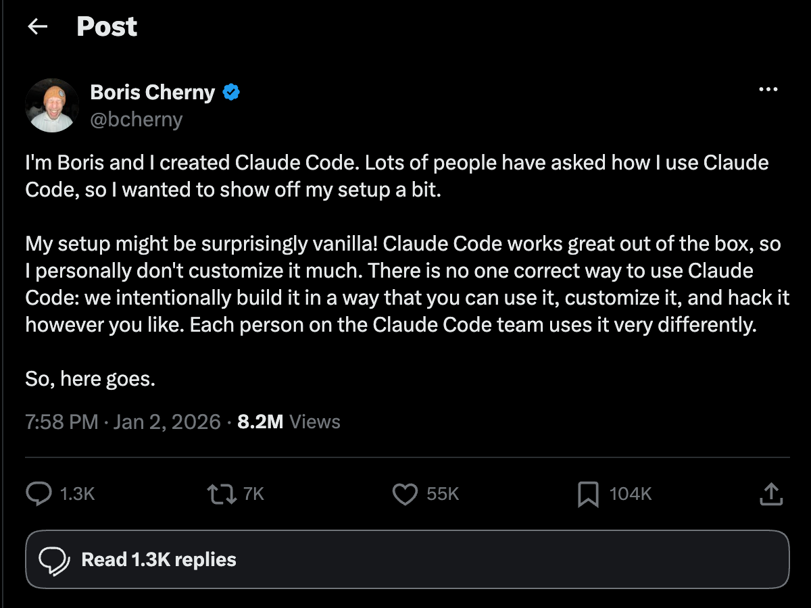

Claude Code Unleashed · Season 1 · Minggu 1
Kamu Baru Pakai
20%
dari Claude Code
12 minggu · 1 project nyata · 1 leaderboard
Sebelum mulai — siapa di sini yang begini?
Tiap mulai task → jelaskan ulang konteks dari nol.
Hook · Run cara lama
vibescore-api · tanpa CLAUDE.md
3 kata prompt → hasil tebak-tebakan.
Hook · Run cara benar
›tambahkan endpoint healthz
run lama
vibescore-api · CLAUDE.md + plan mode
Task sama. Model sama. Hasil beda.
Pesan inti
Bukan Claude yang menentukan hasilnya —
cara pakaimu.
Peta 12 minggu · 7 primitives + 3 battle
Mg 11
Token & Second Brain
Project musim ini
Vibe Score Leaderboard
vibescore-api
backend · skor /grademe
vibescore-web
frontend · leaderboard
Skor kalian sendiri yang akan tampil di sini.
LIVE · Terminal
Tur built-ins
Fitur bawaan yang jarang dipakai
/context
plan mode
/init
/memory
/review
built-in agents
Ctrl+B
todo
Layar diam — panggungnya di terminal.
Plan mode · shortcut Shift+Tab
Kapan WAJIB plan mode
Task > 1 file
Perubahan menyentuh banyak tempat.
Belum yakin solusi
Bentuk jawaban masih kabur.
Repo asing
Belum paham struktur & konvensi.
CLAUDE.md · anatomi
Always-on context
Kebaca di SETIAP session — tiap token dibayar terus.
Hirarki
Global ~/.claude/CLAUDE.md (pribadi) vs project CLAUDE.md (tim, masuk git).
4 SECTION TEMPLATE VENTURO
CLAUDE.md · anti-pattern
✕Hal yang bisa Claude temukan sendiri
Tiap baris = pajak token di SETIAP session.
Kebiasaan #1 · tulis, jangan ulang-prompt
≈Koreksi di chat = patch — sekali pakai, hilang sesi depan
✓Tulis ke CLAUDE.md / skill = fix — berlaku selamanya
Tiap Claude salah, jangan bilang "ulangi" —
suruh dia tulis aturannya.
Error rate turun tiap minggu → Claude bisa jalan berjam-jam.
Bukti · Boris Cherny (pencipta Claude Code)

Scan → baca aslinya di X
LIVE · Terminal
Live build
Bangun repo dari nol
/init
→
template Venturo
→
AGENTS.md + PRD
dari project-definition.json · layar diam selama demo.
Apa yang barusan terjadi
project-definition.json
→
CLAUDE.md
AGENTS.md
docs/01-prd.md
→
Repo SIAP di-vibe-code
save point → tag s1w1-end
Project baru vs existing · jembatan ke Challenge
Project BARU
vibescore · di sesi ini
Hasil /init
Tipis — repo kosong/kecil.
Langkah kalian
definisi produk → /init → template → PRD.
Konteks di-BANGUN.
Project EXISTING
project kerja kalian
Hasil /init
Kaya — baca struktur, config, history.
Langkah kalian
/init → review diff → pangkas ke ≤50 baris.
Konteks di-SARING.
Launch /grademe
Install
/plugin marketplace add venturo-id/venturo-claude
/plugin install grademe@venturo-tools
alternatif dev: claude --plugin-dir …/venturo-cc-unleashed/grademe
Cara baca output
total
breakdown
misses
advice
prompt_analysis
Workflow 5 langkah = rubrik /grademe
Baseline publik #1 · skor instruktur
Variance ±4 normal — kejar tren, bukan desimal.
Challenge besok pagi · ±30 menit di project kerja
1/init di project kerja
2Rapikan pakai template → ≤ 50 baris
3Plan mode untuk 1 task nyata — review rencananya
4/grademe <nama> setelah task selesai
5Screenshot skor → bawa minggu depan
Format lapor
Nama:
Project (boleh disamarkan):
Skor /grademe: XX/100
Dimensi terlemah:
1 hal beda minggu depan:
+ screenshot output /grademe
Minggu depan
Skills — metodologi senior engineer
yang tinggal di-install.
Leaderboard mulai dibangun beneran →
Tips corner · besok pagi buka /context — lihat apa yang membakar token.
01 / 19
→ lanjut · ← mundur · ? bantuan